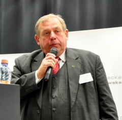
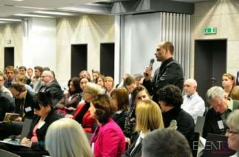
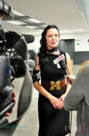

Proces integracji środowiska prawniczego i lekarskiego rozpoczęty
magda 9 lipca 2014 Bez kategorii 0Stało się to za sprawą I Kongresu Medycznego „Błędy medyczne – wyzwanie dla prawa i medycyny”, który odbył się we Wrocławskim Centrum Kongresowym we Wrocławiu. Organizatorami wydarzenia byli: Evento SA oraz Mecenas Justyna Flankowska.
Stało się to za sprawą I Kongresu Medycznego „Błędy medyczne – wyzwanie dla prawa i medycyny”, który odbył się we Wrocławskim Centrum Kongresowym we Wrocławiu. Organizatorami wydarzenia byli: Evento SA oraz Mecenas Justyna Flankowska.
Jakie wnioski?
- W opinii samych uczestników było to bardzo udane wydarzenie, dlatego z radością myślę już o kolejnej edycji Kongresu, w którym tym razem poruszymy temat błędów lekarzy w komunikacji z pacjentem – mówiła tuż po zakończeniu Kongresu Mecenas Justyna Flankowska.
Ale za nim Evento S.A. rozpocznie zbieranie zgłoszeń do udziału w następnym wydarzeniu, warto wrócić do wypowiedzi i komentarzy prelegentów. Byli wśród nich: rzecznicy odpowiedzialności zawodowej, sędziowie sądów okręgowych i apelacyjnych, profesorowie medycyny i prawa, członkowie komisji do spraw orzekania o zdarzeniach medycznych, członkowie komisji praw człowieka oraz adwokaci, którzy prowadzą procesy o błędy medyczne.
Kluczowy wniosek jest jeden: nie wszystkie zdarzenia medyczne prowadzą do odpowiedzialności lekarzy, ale bezwzględnie warto znać te, które prowadzą. Okazuje się, iż lekarze znajdują się znaczenie częściej na sali sądowej z powodu zwykłych zaniedbań, których przyczynami jest opieszałość, zmęczenie, brak zainteresowania pacjentem, brak dociekliwości, ciekawości – pogłębiania diagnozy, niż poważnych błędów w sztuce wykonywania zawodu.
Jednak jak podkreśla dr n. med. Grzegorz Luboiński, współpracownik Fundacji im. Stefana Batorego, medycyna nie gwarantuje nieśmiertelności. W przypadku zdarzeń medycznych współpraca lekarzy i prawników jest niezwykle cenna: – Prawnik w obronie pacjenta musi czasem wystąpić przeciwko lekarzowi. Na dodatek obie korporacje posługują się dość hermetycznym językiem. Sam tego doświadczam, gdy występuję jako biegły – i sędzia i ja zastanawiamy się, co druga strona miała na myśli.
Stanowisko to potwierdza Paweł Szewczyk, Sędzia Sądu Okręgowego w Krakowie: – Nie tylko lekarze powinni być świadomi swojej odpowiedzialności, ale też prawnicy powinni zrozumieć sytuację, wyzwania i ograniczenia systemu medycznego.
Warto dodać, iż to właśnie we Wrocławiu Sąd przyznał poszkodowanej rekordowe 1 mln zł zadośćuczynienia i odszkodowania oraz 13 tys. zł renty miesięcznie.
- Lekarze wykonują zawód w trudnych realiach, ten Kongres ma być jak zapięcie pasów bezpieczeństwa w rajdowym samochodzie. Ma pomóc wykonywać zawód świadomie i bezpiecznie – podkreśla Mecenas Justyna Flankowska.
A wszystko sprowadza się do szczegółów, takich jak np. staranne prowadzenie dokumentacji medycznej, czy rozmowa z pacjentem o ryzku i możliwych formach powikłań. - Zostały dziś uwypuklone i zdiagnozowane istotne problemy, dotyczące np. standardów leczenia – komentowała Mecenas Bogdana Słupska-Uczkiewicz, Członek Komisji Praw Człowieka przy Naczelnej Radzie Adwokackiej.
Wydarzenie podsumował także Przemysław Bandura, prezes Evento S.A.: – Dziś obradujemy w sali na 300 osób, ale Kongres będzie cykliczny i mam nadzieję, że następnym razem spotkamy się w sali na 1000 osób. To możliwe, gdyż jak pokazuje dzisiejsza debata, integracja dwóch niezależnych środowisk jest nie tylko wartościowa, ale i konieczna.
{kind=link}
Na zdjęciu organizatorzy Kongresu: Przemysław Bandura, prezes Evento S.A. oraz Mecenas Justyna Flankowska wraz z prof. Wojciechem Witkiewiczem, który mówił o szczególnym rodzaju błędów medycznych mogących wystąpić przy użyciu zaawansowanych technologii, w tym robota Da Vinci oraz operacji pacjenta na odległość.
PRELEGENCI I KONGRESU MEDYCZNEGO
Prof. dr hab. n med. Wojciech Witkiewicz, doktor honoris causa Uniwersytetu Przyrodniczego we Wrocławiu, dyrektor Wojewódzkiego Szpitala Specjalistycznego we Wrocławiu, Prezes pierwszego w Polsce Towarzystwa Chirurgii Robotowej, ordynator Oddziału Chirurgii Ogólnej, Naczyniowej, Transplantacyjnej, Oddziału Chirurgii Onkologicznej i Chemioterapii, kierownik projektu „WROVASC – Zintegrowane Centrum Medycyny Sercowo-Naczyniowej”
Prof. dr hab. Jerz Skorupka, Sędzia Sądu Apelacyjnego we Wrocławiu, Kierownik Katedry Postępowania Karnego Wydziału Prawa, Administracji i Ekonomii Uniwersytetu Wrocławskiego
Jolanta Orłowska-Heitzman, Naczelny Rzecznik Odpowiedzialności Zawodowej, Prezes Polskiego Towarzystwa Prawa Medycznego
Małgorzata Łoboz, Sędzia Sądu Okręgowego w Krakowie
Paweł Szewczyk, Sędzia Sądu Okręgowego w Krakowie, wykładowca Krajowej Szkoły Sądownictwa i Prokuratury w Krakowie
Mecenas Andrzej Malicki, Dziekan Okręgowej Rady Adwokackiej we Wrocławiu, Członek Komisji do spraw Orzekania o Zdarzeniach Medycznych przy Wojewodzie Dolnośląskim
Mecenas Bogdana Słupska-Uczkiewicz, Członek Komisji Praw Człowieka przy Naczelnej Radzie Adwokackiej
Dr n. med. KonradLeśniakowski, Członek Komisji do spraw Orzekania o Zdarzeniach Medycznych przy Wojewodzie Dolnośląskim, biegły sądowy
Dr n. med. Grzegorz Luboiński Współpracownik Fundacji im. Stefana Batorego
PATRONI HONOROWI KONGRESU
Uniwersytet Medyczny we Wrocławiu
Uniwersytet Wrocławski Wydział Prawa, Administracji i Ekonomii.
Okręgowa Izba Adwokacka we Wrocławiu
Mecenas Andrzej Malicki, Dziekan Okręgowej Rady Adwokackiej we Wrocławiu
Gratulacje dla organizatorów! To ważny temat, szczególnie teraz, gdy powstają nowe instytucje, które mają orzekać, co jest zdarzeniem medycznym, a co nie. Cieszę się, że jestem tu z Państwem.
{kind=link}
Prelegenci poruszali ważne tematy. Uczestnicy zadawali pytania i polemizowali.
{kind=link}
 Temat I Kongresu Medycznego był interesujący także dla mediów.
{kind=link}
{kind=link}
vento S.A. oraz Mecenas Justyna Flankowska przygotowują merytoryczne podsumowanie wystąpień prelegentów w formie elektronicznej broszury. Jeśli są Państwo zainteresowani publikacją, prosimy o kontakt: p.wojtasinski@eventosa.pl
Zapraszamy na: www.kongresmedyczny.com